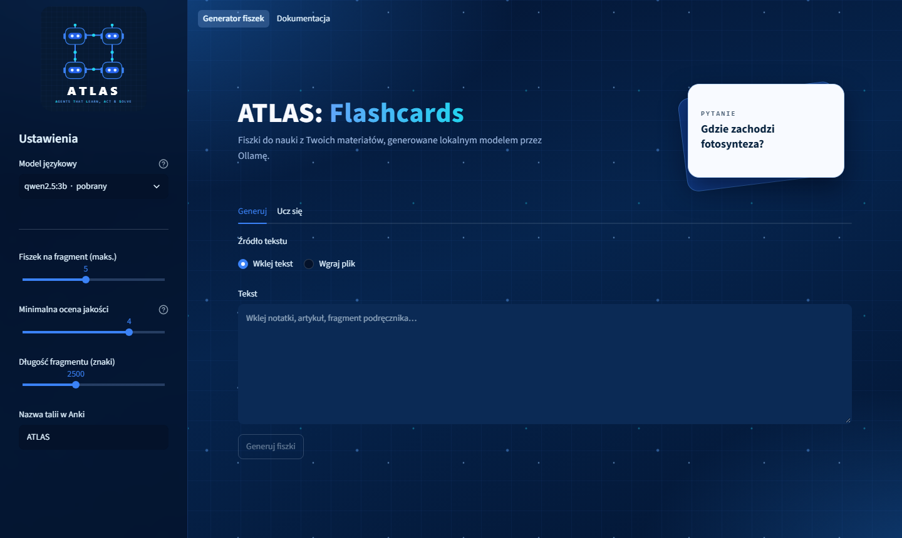
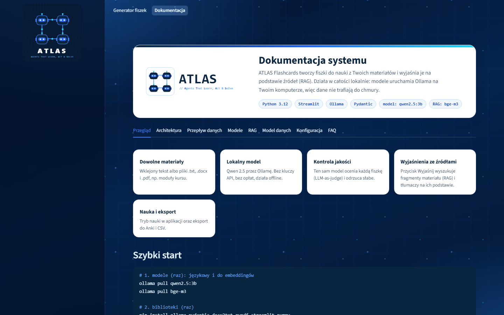
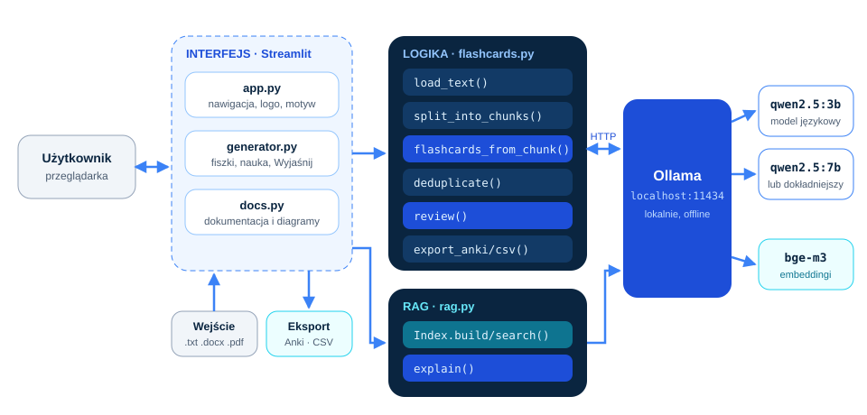
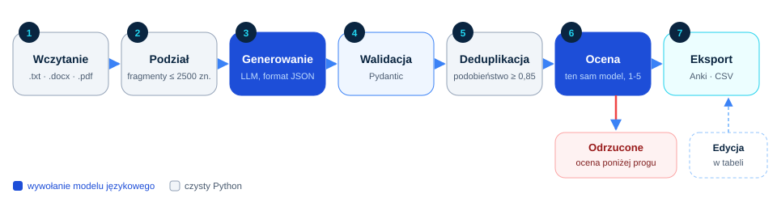
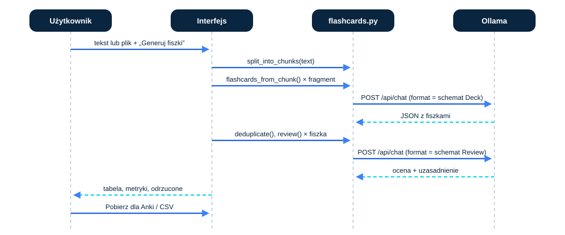
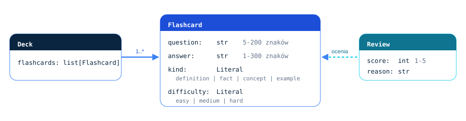
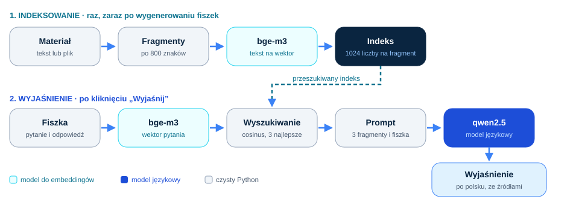

ATLAS: Flashcards
Aplikacja, która z notatek, artykułu albo pliku .pdf, .docx lub .txt tworzy fiszki do nauki. Wszystko działa lokalnie: model językowy uruchamia Ollama na Twoim komputerze, więc materiały nie trafiają do chmury.
Uruchom u siebie Kod źródłowy

Funkcje
Jeden model językowy pisze fiszki i sam ocenia ich jakość. Słabe są odrzucane, zanim trafią do talii.
Dowolne materiały
Wklejony tekst albo pliki .txt, .docx i .pdf, dzielone na fragmenty.
Lokalny model
Qwen 2.5 przez Ollamę. Bez kluczy API, bez opłat, działa offline.
Kontrola jakości
LLM-as-judge ocenia każdą fiszkę w skali 1-5, duplikaty są usuwane.
Wyjaśnienia ze źródłami
Przycisk Wyjaśnij w trybie nauki wyszukuje fragmenty materiału (RAG) i tłumaczy na ich podstawie.
Nauka i eksport
Tryb nauki w aplikacji, edycja fiszek w tabeli, eksport do Anki i CSV.
Wybór modelu
Lista pobranych modeli i katalog do pobrania z rozmiarem, pobieranie z poziomu aplikacji.
Architektura
Interfejs w Streamlit wywołuje logikę w flashcards.py i rag.py, a te rozmawiają z lokalnym serwerem Ollama.

Przepływ danych
Tekst jest dzielony na fragmenty, model tworzy z nich fiszki w formacie JSON zgodnym ze schematem Pydantic, potem następuje deduplikacja, ocena i eksport.



RAG: wyjaśnienia na podstawie materiału
RAG (Retrieval-Augmented Generation) to sposób, w którym model przed odpowiedzią dostaje fragmenty Twojego materiału, wyszukane po znaczeniu. Dzięki temu wyjaśnia fiszkę na podstawie źródła, a nie z pamięci, i podaje, z którego fragmentu korzysta.

- Indeksowanie: materiał jest dzielony na fragmenty po ok. 800 znaków, a model
bge-m3zamienia każdy na wektor. - Wyszukiwanie: pytanie i odpowiedź z fiszki też stają się wektorem, a podobieństwo cosinusowe wybiera 3 najbliższe fragmenty.
- Odpowiedź: model językowy dostaje ponumerowane fragmenty i odpowiada po polsku, powołując się na nie jako [1], [2].
- Zwykły RAG: wyszukiwanie zawsze, w jednym kroku, według stałego przepisu. Tak działa ten projekt.
- Agentowy RAG: model sam decyduje, czy i czego szukać, może szukać kilka razy. To temat kolejnych projektów ATLAS.
- Indeks w pamięci: wektory w numpy, bez bazy wektorowej, co wystarcza dla pojedynczego materiału.
Modele
| Model | Rola | Rozmiar |
|---|---|---|
qwen2.5:3b | domyślny model językowy: pisze fiszki, ocenia je i wyjaśnia | 1,9 GB |
qwen2.5:7b | dokładniejszy, wolniejszy; dla mocniejszego sprzętu | 4,7 GB |
bge-m3 | model do embeddingów (1024 wymiary), wielojęzyczny, dobrze radzi sobie z polskim | 1,2 GB |
| inne z katalogu | llama3.2, gemma3, qwen3, mistral, phi4-mini i inne, do pobrania z aplikacji | 1-5 GB |
Uruchomienie
Wymagania: Python 3.12 i Ollama.
# 1. kod
git clone https://github.com/juliuszlosinski/ATLAS.git
cd ATLAS/Flashcards
# 2. modele (raz): językowy i do embeddingów
ollama pull qwen2.5:3b
ollama pull bge-m3
# 3. biblioteki (raz)
pip install -r requirements.txt
# 4. aplikacja
python -m streamlit run app.py
# testy (bez modelu, z atrapą)
python -m unittest discover tests